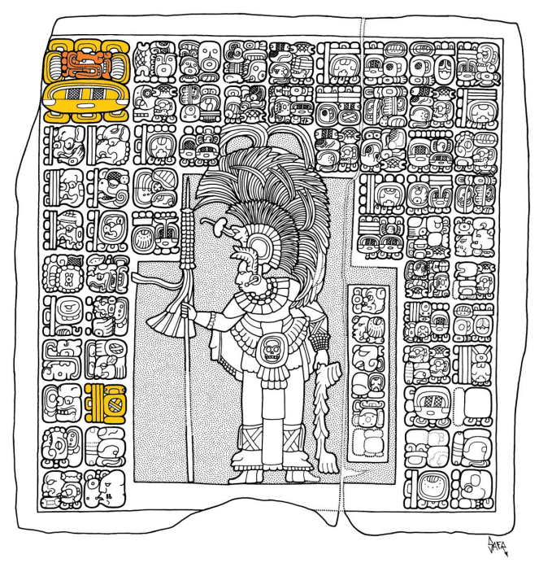
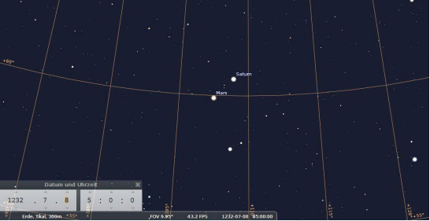

Fig. 1: Section of the Table of Mars, page 78, Dresden Codex
The Dresden Codex has long been known for its extensive astronomical information. Ever since it was in the possession of the Royal Saxon Library, since 1740, it has been extensively studied by a large number of researchers. The basic features of the number and calendar system of the Maya were recognized early on with the help of this Indian handwriting. It was soon found that the Maya used these tablets to predict eclipses (pages 30 to 37) and to describe the Venus year of 584 days in detail, for example to calculate when Venus would rise again as a morning star (pages 24 to 29).
In the middle section of the last three pages of the manuscript, pages 76 to 78, there are dates and numbers that Robert Willson had already interpreted in 1924 due to the occurrence of multiples of the number 780 as a table of Mars. In fact, the length of the Martian synodic year is 780 days. However, some researchers have also suggested that this section describes Jupiter or Mercury. There is also sometimes talk of multiples of eclipse cycles. Part of the problem is that the Martian year of 780 days happens to be exactly three times the Tzolk'in cycle of 260 days. Also, the animal hanging from the sky band, which cannot be assigned exactly to a specific species, has not yet been positively identified as a "Mars symbol". However, the majority of Maya researchers today agree that these are probably tablets from Mars.
Let's take a closer look at these panels. For better orientation, we have labeled the individual columns with letters.
Fig. 2: The Tables of Mars on pages 76, 77 and 78, center, of the Dresden Codex.
In column A one sees a hieroglyph which is repeated in columns M to T both as a hieroglyph and in iconographic form. It is the so-called "Martian Monster". Columns B to L must be divided again into an upper and lower part. In column G below you can see the Mayan number 2.3.0., which when converted to 780 corresponds to exactly one Martian year. In column F below, the number 4.6.0., double the first number, represents 2 Martian years. The next number in column E below shows the number 6.9.0., which is three Martian years. It was these and other numbers that led to the assumption that it must be a Martian tablet.
The Table of Mars begins, as seen in the very first hieroglyph in column A, with the Tzolk'in Day 3 Lamat. The same day can also be seen under column G below, which, as mentioned, corresponds to a Martian year. The following multiples of Martian years always lead to the same daily position 3 Lamat, since the Martian year corresponds to a multiple value of the Tzolk'in cycle.
Now where is the beginning of the table of Mars? Is there a base date? Let's look for it! In column A, under the daily glyph 3 Lamat and the hieroglyph for the Martian monster, we find a five-digit number that looks suspiciously like a Long Count date: 9.19.8.15.0. This number corresponds to 1435980 days or 1841 Martian years. Interpreted as the date of the Long Count, converted into the Gregorian calendar, it returns March 13, 819 AD. Now we will examine the corresponding daily position. This would be 4 Ajaw. The associated monthly position of 13 Sip should not interest us for the time being, since the Mars tables do not give any monthly information. But we will come back to this month later. In fact, we find the date of 4 Ajaw in the last position in column A. In between there are 3 Lamat and 17.12. A ring is drawn around the 12. This so-called "ring number" must be subtracted. We already have this knowledge from the Venus table.
Therefore, to arrive at the base datum 3 Lamat, one should start from the given number 9.19.8.15.0. the distance 17.12. subtract:
9.19.8.15.0.
minus 0.0.0.17.12. (352 Days)
= 9.19.7.15.8.
The result is the date 9.19.7.15.8. The associated calendar round is 3 Lamat 6 Sots'. Together with the calendar round date we get:
9.19.8.15.0. 4 Ajaw 13 Sip
minus 0.0.0.17.12.
= 9.19.7.15.8. 3 Lamat 6 Sots´.
The result date actually leads to 3 Lamat. This date 9.19.7.15.8. 3 Lamat 6 Sots' is the base date of the Martian table in the classical Maya period. In the proleptic Gregorian calendar, it corresponds to March 26, 818 AD. In the Julian calendar, it corresponds to March 22, 818 AD.
We will next look at the smallest distance numbers and add them to the base datum. In the columns M, O, Q and S we find the numbers 19, 19, 19 and 21. Let's add 19 days to the classic base date 9.19.7.15.8. 3 Lamat, we get as a result 9.19.7.16.7. 9 Manic'. In fact, in the N column we find a 9, as usual for coefficients, in red font color. The black numbers are the distance numbers. The day of Manik' has not been written. Next we add 19 days again. We reach the date 9.19.7.17.6. 2 Kimi. In fact, in the P column we see the coefficient 2. Again we add the distance number 19, from the Q column. This brings us to the date 9.19.8.0.5. 8 Chikchan. In fact, in the R column we see the coefficient 8. Finally, we add the distance number of the S column, that is, 21. We arrive at the date 9.19.8.1.6. 3 Kimi. As expected, we find the coefficient 3 in the last column. We find the same date 3 Kimi again in column L below, because the distance number in column L below corresponds exactly to 78 days. That's exactly the sum of the days we've added up so far: 19+19+19+21.
In the following columns, i.e. K below, J below, I below and H below, we find 2, 3, 4 and 5 times 78 days expressed. After the date 9.19.8.1.6. 3 Kimi, which we had reached after the first addition of a total of 78 days, we could add 19+19+19+21 days again. Or we can add 78 days straight away. We want to calculate this second series again here to see which coefficients we achieve in each case.
19 days after 9.19.8.1.6. 3 Kimi would come the date 9.19.8.2.5. 9 Chikchan. We are back at the coefficient 9 in the N column. But while we had reached 9 manik' in the first row, we have now reached 9 chikchan. So the coefficient 9 is the same, but the day is different. Next we calculate 9.19.8.2.5. plus 19 days. We reach the date 9.19.8.3.4. 2 k'an. Now we have the coefficient 2 again, shown in column P. The next date, which we get again after adding 19 days, is called 9.19.8.4.3. 8 Ak'bal. The coefficient 8 can be seen again in the R column.
Between these two dates, 9.19.8.3.4. 2 K'an and 9.19.8.4.3. 8 Ak'bal, the date of a lunar eclipse is July 25, 818 Gregorian or July 21, 818 Julian, with the Mayan date 9.19.8.3.9. 7 Muluk 7 Yaax. However, it was only visible in Europe and Africa, not in the Maya area. In column R we find the corresponding hieroglyph for lunar eclipse in the hieroglyphic text, this time not with the sign for moon in the center, but the sign for night: ak'bal. The preceding hieroglyph means solar eclipse and refers to the solar eclipse that occurred 15 days earlier on the Mayan date 9.19.8.2.14. 5 Hiix 12 Ch´een (See Fig. 1). This solar eclipse was also not visible in the Maya region, but as a total solar eclipse in Japan, in the morning hours of July 11, 818 Gregorian, July 7, 818 Julian. According to Susan Milbrath, Mars was in its retrograde motion at the time of both eclipses.
After further addition of now 21 days to the last date 9.19.8.4.3. 8 Ak'bal results in the date 9.19.8.5.4. 3 k'an. The coefficient 3 can be seen in column T, the whole day 3 K'an is given in column K below, because this column expresses the period of 2 times 78 days.
We could go on and on with this calculation. Let's look at what numbers are expressed throughout the Table of Mars below:
Fig. 3: The Mars tables on pages 76, 77 and 78, center, of the Dresden Codex with numerical values
Let's first turn our attention to the daily positions in the 78-day sections to see if they are all correct. The number 78 is a multiple of 13. This means that the coefficient of the day must always be the same, because it is always counted up to 13. The starting point was 3 Lamat. In fact, we find the coefficient 3 at all stations of 78 days. So this is already correct. How must the days change now? Since a month has 20 days and the number 78 consists of 3 times 20 + 18 days, we move forward 18 day positions or backward 2 day positions. Assuming 3 Lamat, then 78 days later the next day should be 3 Kimi, then 3 K'an, which should be followed by 3 Ik', then 3 Ajaw, then 3 Ets'nab, then 3 Kib, then 3 Hix, then 3 Eb, then 3 Ok and finally 3 Lamat again. All of these days are correctly recorded in the Tables of Mars.
Fig. 4: Tzolk'in days of the 78-day sections of the Martian table
As already mentioned, the columns K below, J below, I below and H below express 2, 3, 4 and 5 times 78 days. If we then move up to the L column above, we see 6 times 78 days as 1.5.8. written. Going further to the left we find 7 times 78 days written, as well as 8 and 9 times 78 days. The number of 10 times 78 days or 1 times 780 days is not written in column H above, but in column G below. Column F below gives 2 times 780 days. Column E below shows 3 times 780 days. Column D below should be expected to reflect 4 times 780 days. The number 9.7.0. however, corresponds to 13 Tzolk'in, i.e. 4 times 780 days plus 260 days. At this point you might think it was a bug, but that's pretty unlikely. To express four Martian years one would have to use the number 8.12.0. write. Here became 9.7.0. written. So there must be two spelling mistakes. In the Tun position there should be one point too many, in the Winal position there should be a bar missing. However, it is unlikely that one makes two mistakes in one Mayan number. More importantly, the supposed error is 260 days. We observe the same phenomenon in columns D above, F above and H above. Each time the deviation is 260 days. That can't possibly be a coincidence. The most important thing is that the deviation of 260 days leads to exactly the same position in the Tzolk'in calendar. It is therefore very likely that the deviation was deliberate. Below we will examine these divergent numbers in more detail.
First, let's look at the number in column H above. Here we have the number 1.16.2.0. Below it is written the position of the day 3 Lamat. The coefficient would normally be written to the left of the day glyph, but here it is above it for space reasons. Of course, one must not make the mistake of regarding this 3 as the position of the number written above. The number 1.16.2.0. equals 1 x 7200 + 16 x 360 + 2 x 20 + 0 x 1 = 13000 days. That's 16.6666 Martian years, or 17 Martian years minus 260 days. At this point one might have expected 10 Martian years. So what happened here? Why do we have such a non-integer number of 16 ⅔ Martian years?
The explanation is simple. A Martian year is actually not 780.00 days long. The 780 days are only a rounded value. Rounded to two decimal places, the Martian year is 779.94 days long. The error per Martian year is therefore 0.06 days. If we now multiply exactly this error value by the 16 ⅔ Martian years, we get exactly one day:
0.06 days/Martian year × 16 ⅔ Martian years = 1 day
The incomplete and apparently erroneous statement of 16 ⅔ Martian years is therefore perfect for correcting the accumulated error of one day. The ingenious thing is that, despite the error correction, the Martian table can still be used with the same day positions, since the correction includes a whole Tzolk'in cycle, which means that the day will be the same again.
So there are four total distance numbers, each containing corrections of 260 days. While the number in column H above can be easily explained in terms of its meaning, the motivation for listing the other three numbers is not so readily apparent. In any case, it is evident that these numbers, which are not integer multiples of Martian years, cannot possibly be erroneous. After all, with exactly 260 days of "error" in each case, we invariably have the effect that the Tzolk'in day is repeated exactly.
Let's take a closer look at these three mysterious numbers. In column D below we find the number 9.7.0., which corresponds to 3380 days, i.e. 4 ⅓ Martian years. In column F above is the number 4.5.17.0. written, which corresponds to 30940 days or 39 ⅔ Martian years. Finally, in column D above we find the number 10.2.4.0. which corresponds to 72800 days or 93 ⅓ Martian years. These three numbers are not numbers used to correct the orbital period of Mars. This can be easily seen by calculating the error resulting from the difference between the actual Martian year of 779.94 days and the idealized value of 780 days. With 4⅓ Martian years, the error is 0.26 days. At 39 ⅔ Martian years, the error is 2.38 days. With 93⅓ Martian years it would be 5.6 days of error. So the motivation for using these numbers must lie elsewhere.
Now we know that the Maya did not look at each planet in isolation, but were primarily interested in conjunction dates. So it is obvious to look at the relationship of the planet Mars to other planets. So we will look for the formulas that express these relationships. To do this, we determine the least common multiple of the integer planetary orbital periods between Mars and Saturn, Mars and Mercury, and Mars and Jupiter. The resulting formulas are:
29 Mars years = 195 Mercury years 29 x 780 = 195 x 116
63 Mars years = 130 Saturn years 63 x 780 = 130 x 378
133 Martian years = 260 Jupiter years 133 x 780 = 260 x 399
146 Mars years = 195 Venus years 146 x 780 = 195 x 584
If we now compare these three formulas with the three or four not-integer multiples of Martian years, the motivation for these numbers quickly becomes clear, because they simply serve to express these 29, 63, 133 and 146 Martian years.
16 ⅔ + 4 ⅓ = 21 21 x 3 = 63 63 Martian years = 130 Saturn years
93 ⅓ + 39 ⅔ = 133 133 Martian years = 260 Jupiter years
2 x 16 ⅔ - 4 ⅓ = 29 29 Martian years = 195 Mercury years
4 x 16 ⅔ + 2 x 39 ⅔ = 146 146 Martian years = 195 Venusian years
So you can see that these non-whole multiples of Martian years serve to establish the connection between Mars and Saturn, Jupiter, Venus and Mercury. It is by no means a typographical error.
However, as other Mayan researchers have noted, there is a typographical error in the Table of Mars.i This is the first number in column E above. Instead of 9.13.6.0. it must be 8.13.6.0. hot. The number 9.13.6.0. would correspond to 69600 days. That would be 89.23077 Martian years. That's certainly a non-integer number that doesn't make sense. But the proof lies in the Tzolk'in position. Starting with a Day 3 Lamat, if we add 69600 days, we don't get back to the same day as this number is not a multiple of 260 days. At 8.13.6.0. on the other hand, we get exactly 80 Martian years, which means that the daily position of 3 Lamat is reached again.
Finally we are left with three very large numbers. These are the numbers 15.3.6.0 in columns B above and C above. and 18.4.0.0., expressing 140 and 168 Martian years, respectively. These two numbers also connect with Saturn.
140 Martian years equal 109,200 days. 9 times this number equals 2600 Saturn years of rounded 378 days. 780 × 140 × 9 = 2600 × 378 (= 982,800). So this relation is suitable to connect Mars with Saturn. The error, which accumulates almost imperceptibly in this 2700 solar year long period, is exactly 234 days, since an exact Saturn year is 378.09 days long.
168 Martian years equal 131,040 days. 3 times this number corresponds to 1040 Saturn years. 780 × 168 × 3 = 1040 × 378 (= 393,120). The number of 168 Martian years has another advantage, which when added to the base date 9.19.7.15.8. becomes recognizable:
9.19.7.15.8.
+ 18.4.0.0.
= 10.17.11.15.8.
The result is the date 10.17.11.15.8. 3 Lamat 11 Sots´. This corresponds to January 3, 1177 Gregorian and December 27, 1176 Julian. Here we look at the starry sky:
Fig. 5: The starry sky on the Maya date 10.17.11.15.8. 3 Lamat 11 Sots´
As we can see, Saturn is exactly at the zenith. Also, Saturn is right next to the Pleiades. The same phenomenon can be observed when adding the 140 Martian years to the base date:
9.19.7.15.8.
+ 15.3.6.0.
= 10.14.11.3.8.
This date 10.14.11.3.8. 3 Lamat 11 Yaxk'in corresponds to March 19, 1117 Gregorian or March 12, 1117 Julian. Saturn is again close to the Pleiades. Also on this day Saturn passes the zenith, only this is not visible because it happens before sunset. This approach of Saturn to the Pleiades occurs at intervals of almost 30 years. The closest approach was 1147. According to Victoria and Harvey Bricker, the Maya observed an empirical sidereal Martian year, that is, observed the position of Mars relative to the starry background. Now the assumption is obvious that they observed the empirical sidereal Saturn year analogously. This should be investigated by Mayan researchers in the future. It should also be noted that this couple of explorers provide an explanation for the 78-day sections of the Martian table. They say that Mars' retrograde motion lasts about 75 days. So the 78 days as an integer divisor of 780 is the best approximation.
Anyone who still has doubts about an association between the table of Mars and Saturn will find spectacular proof of this below.
Incidentally, these large distance numbers are not eclipse cycles, as is sometimes assumed. This can be checked quickly by expressing the eclipse cycles as days and comparing them with the distance numbers on the Martian table. The only number that could express an eclipse cycle would be the starting date 9.19.8.15.0. This number corresponds, intentionally or not, to a 120-fold Mayan cycle plus one Martian year.
Name
Semester
Hepton
Octon
Anonymous
Tritos
Saros
Inex
3 Tritos
Maya
3 Saros
Month
6
41
47
88
135
223
358
405
669
Day
177
1211
1388
2599
3987
6985
10572
11960
19756
Maya number
10.2.4.0.
15.3.6.0.
18.4.0.0.
1.1.0.6.0.
9.19.8.15.0.
Martian year
93 + 260
day
140
168
194
1841
Day
72.800
109.200
131.040
151.320
1.435.980
Eclipse cycles
nothing
nothing
nothing
nothing
120 Mayan +
780 days
Above we have the first number 9.19.8.15.0. used and subtracted the number of rings given after it. Here one might ask why the Maya astronomers did not write down this base date right away. The reason is that the first number is a multiple of Martian years. Another reason may be to tie into the Mayan 11960 day eclipse cycle at the same time. The third reason is to describe the Martian year with the retrograde motion with the ring number of 352 days, because the Martian year can then be composed of three sections: 352 days from the conjunction with the sun to the first stationary point + 76 days retrograde Movement + 352 days from the second stationary point to the next conjunction with the Sun = 780 days. But there is a fourth reason. The initial date of the table of Mars 9.19.8.15.0. 4 Ajaw 13 Sip falls exactly on the month of Sip. what is so special about that? The month of Sip is directly related to Mars because the patron saint of the month of Sip is the Martian monster. At this point we will also show which animal this Martian monster is derived from. The necessary information can be found in Diego de Landa's "Yucatán Report". He writes: “The hunters and fishermen celebrated ... on the seventh day of the month of Sip, ... The hunters ... in devout attitude invoked the gods of the hunt: Aj Kanum, Suhuy Sip, Sipitabai and others, and they shared the incense among them, which they threw into the brazier; while it burned, each produced an arrow and a stag's skull, which the Chakes smeared with the blue tar. As soon as they were smeared with it, the hunters picked them up and danced; others pierced their ears, still others their tongues, and through the holes they pulled seven slightly broader leaves of a herb they call Ak.” (Diego de Landa, pp. 119-121).ii Interestingly, the Dresden codex depicts a god called 7 Sip. His name is written phonetically. After the number 7, which consists of a bar and 2 dots, are the syllable signs -si and -pu. He wears the antlers of a deer on his head. The connection with the stag is further strengthened by the fact that a stag sits directly opposite this god of the hunt. Note that this god has the number 7 in his name, and Diego de Landa mentions exactly the seventh day of the month.
Fig. 6: The god of deer hunting 7 Sip. in the Dresden Codex. Drawing by Jens Rohark
As mentioned, the month of Sip has the Mars monster as its patron saint. This appears as a variable element in the introductory glyph of the Long Count, for example in the Dumbarton Oaks panel showing the date of the initial series 9.10.16.8.14. 7 Hiix 17 Sip contains.

Fig. 7: Panel from Dumbarton Oaks. Originally from Piedras Negras. The introductory glyph with the Mars monster and the monthly glyph Sip are marked in colour. Drawing by Alexander Safronov.
Durch Diego de Landa wissen wir also, warum es eine Verbindung zwischen Sip und dem Marsmonster gibt. Der Name Sip erscheint in Namen von Göttern für die Hirschjagd. Das Marsmonster muss also mit dem Hirsch verbunden sein. Tatsächlich kann man am Marsmonster Hirschhufe erkennen. Wir vergleichen die Marsfigur auf Seite 78 des Dresdener Codex einmal mit der Figur auf Seite 72 der gleichen Handschrift. Auch hier ist ein Marsmonster abgebildet. Oben im Text erscheint die gleiche Hieroglyphe. Der Körper des Marsmonsters ähnelt durchaus dem eines Hirsches, nur der Kopf ist etwas fantasievoll entstellt. Beide Figuren hängen vom Himmelsband herab.
Fig. 8: The Mars Monster on page 72 of the Dresden Codex
Finally, in the Madrid Codex, a stag can be seen lying directly on the sky band. So the stag is directly associated with the band of the ecliptic.
Fig. 9: The stag on the sky band. Madrid Codex. page 47.
The reader should have noticed that we have not yet covered the largest distance number 1.1.0.6.0., which corresponds to 194 Martian years. This number is not associated with Saturn, nor is it an eclipse cycle. Where do we actually end up when we add this large number of distances to the base number?
9.19.7.15.8. 3 Lamat 6 Sots´
+ 1.1.0.6.0.
= 11.0.8.3.8. 3 Lamat 16 K´ank´in
The preserved date corresponds to 13 June 1232 AD in the Gregorian calendar, 6 July 1232 in the Julian calendar. So here we have a date that is only 5 years after the base date 11.0.3.1.0. 1 Ajaw 13 Mak of the Venus tablet found in the same codex. The latter refers to June 22, 1227 AD in the Gregorian count. With the date 11.0.8.3.8. 3 Lamat 16 K'ank'in we have a new Martian base date for the post-classic period in convenient temporal proximity to the Venus table base date.
But that's not all. The best is yet to come. Just as the base date of Venus falls on an astronomical perfect moment, there is also a perfect moment that the Maya used as the starting point for their table of Mars. To do this, we look at the starry sky for this Mayan date. It is worth remembering here that a Mayan date begins at noon, not at midnight. So we're going to look at the sky from July 6, 1232 (Julian) evening to July 7, 1232 morning.
Only in the morning hours does something exciting happen between the moon and Venus. Two planets appear to be so close together that they cannot be resolved with the naked eye. The extreme magnification of the relevant part of the sky reveals the encounter between Mars and Saturn.
Fig. 10: The starry sky on the Mayan date 11.0.8.3.8. 3 llama 16 k'ank'in
Fig. 11: The starry sky on the Mayan date 11.0.8.3.8. 3 llama 16 k'ank'in. Enlarged section.
To understand the dynamics of these two planets in the temporal context of the day under consideration, we will look at the sky for 5 nights, from three nights before the base date to one night after:
Fig. 12: The starry sky 3 nights before the Mayan date 11.0.8.3.8. 3 llama 16 k'ank'in.
Fig. 13: The starry sky 2 nights before the Mayan date 11.0.8.3.8. 3 llama 16 k'ank'in.
Fig. 14: The starry sky one night before the Mayan date 11.0.8.3.8. 3 llama 16 k'ank'in.
Fig. 15: The starry sky in the night of the Mayan date 11.0.8.3.8. 3 llama 16 k'ank'in.

Fig. 16: The starry sky one night after the Mayan date 11.0.8.3.8. 3 llama 16 k'ank'in.
Mars, which appears somewhat redder, overtook Saturn exactly on the day of the post-classic base date. From this compelling data, we draw two key lessons:
The Maya adjusted the planetary tables in the sky.
The planetary boards are designed to connect different planets at the same time.
Last but not least, we asked ourselves the question of whether it could not be proven that the day 3 Lamat was used as the base date of the tables of Mars not only in post-classic, but already in classical times. In fact, we found a good clue for it. An examination of our collection of Mayan data revealed that the Day 3 Lamat appeared eight times. Five of the eight dates were dates of birth, which we will disregard because a date of birth is not chosen consciously. One date was a consecration date in Ek'balam, which is also uninteresting, since all dates of the acropolis of Ek'balam have no relation to celestial events, since the acropolis was built in record time and therefore its rooms were inaugurated immediately after completion, without one wanted to wait for special celestial events. Another date with 3 Lamat falls on a coronation in Tikal, without a recognizable reference to Mars. One date, however, turns out to be extremely interesting. This is the date 9.11.6.1.8. 3 Lamat 6 Keej in panel 4 of Piedras Negras, which mentions a fire ritual in the tomb of king Yo'nal Ahk for that day. It is worth emphasizing here that there is no other Mayan ritual in which so many important celestial events occur. To clarify this point, we examined all mentions of fire rituals in our database of Mayan data. In 29 fire rituals there were the following heavenly manifestations:
the Pleiades have zenithed 14 times
Jupiter has been at its zenith 7 times
the moon was at the zenith 4 times
Mars has been at its zenith 3 times
Saturn has been at its zenith twice
the moon passed Mars 6 times
the moon passed Jupiter twice
the moon passed Mercury once
there were also numerous conjunctions and alignments between planets...
In other words, if a hieroglyphic text mentions a fire ritual, then it is safe to assume that at least one important celestial event took place on the night mentioned, more likely several. Now the interesting thing is that on the night of the date 9.11.6.1.8. 3 Lamat 6 Keej of panel 4 of Piedras Negras not a single important event was visible in the night sky. It would be the only fire ritual without an important celestial event. So what happened here? To understand this, we will look at the night sky for three consecutive days, starting 2 days before the date noted. The Mayan date 9.11.6.1.8. 3 Lamat 6 Keej corresponds to October 11, 658 AD in the Gregorian calendar. In the Julian calendar it is October 8, 658 AD. We look at the starry sky from two nights before this date, i.e. for the 6th, 7th and 8th of October 658 AD. Julian.
Fig. 17: The starry sky two nights before the Mayan date 9.11.6.1.8. 3 Lamat 6 Keej
Fig. 18: The starry sky one night before the Mayan date 9.11.6.1.8. 3 Lamat 6 Keej
Fig. 19: The starry sky in the night of the Mayan date 9.11.6.1.8. 3 Lamat 6 Keej
It is evident that the decisive celestial event took place on the evening of October 7, 658 AD (Julian). The moon had just overtaken Mars. This date is 9.11.6.1.7 in the Mayan calendar. 2 Manik' 5 Keej. The evening after, which corresponds to the Mayan date 3 Lamat of the hieroglyphic inscription, the moon just moved on, there was no other important event. What is the explanation for this? The only meaningful explanation seems to us to be the following: On the Mayan date 9.11.6.1.7. 2 Manik´ 5 Keej the Maya have observed that an important celestial event is taking place: the moon is passing Mars. Or they saw a few days before that this would happen. A fire ritual should therefore take place on this night. However, this ritual was postponed to the next night because the next night the date fell on 3 Lamat, the base date of the Martian tablet. So the Maya of Piedras Negras wanted to connect this event with the base date of the Martian table and therefore accepted the difference of one day. The discrepancy of one day can only be meaningfully explained if one assumes that 3 Lamat also served as the base date of the Mars table in classical times.
Fig. 20: Text passage in panel 4 of Piedras Negras. Drawing by Jens Rohark.
i Susan Milbrath mentions two errors. She writes: “Two columns show errors in the intervals recorded…” (page 221). In fact, however, the table contains only one error.
ii The Maya words were written in modern orthography.
Bibliography
BRICKER, Harvey M., Anthony F. Aveni, and Victoria R. Bricker: Ancient Maya documents concerning the movements of Mars. Proc Natl Acad Sci USA. 2001 February 13; 98(4): 2107– 2110. PMCID: PMC29390
DE LANDA, Diego: Bericht aus Yucatán. Reclam-Verlag Leipzig. 1990. ISBN 3-379-00528-2
KRYGIER, Mario and Jens Rohark: Anatomie des Mayakalenders. Hein-Verlag. 2017. ISBN 978- 3-944828-03-9.
LEE, Thomas A., Jr.: Los Codices Mayas. Fundación arqueológica Nuevo Mundo, A.C., San Cristóbal de las Casas, Chiapas, y Brigham Young University, Provo, Utah, edición conmemorativa X aniversario, Universidad Autónoma de Chiapas, 1985
MILBRATH, Susan: Star Gods of the Maya – Astronomy in Art, Folklore, and Calendars. University of Texas Press, Austin, 1999. ISBN 0-292-75226-1.
MORALES GUERRERO, Laura Elena: Cycles, Mars, Moon and Maya Numbers. Centro de Investigación y Estudios Avanzados. Cinvestav, México, D. F.
THOMPSON, John Eric Sidney (1972): A Commentary on the Dresden Codex; a Maya Hieroglyphic Book, Philadelphia, American Philosophical Society. Also, “Maya Arithmetic” (1941), Contributions to American Anthropology and History, Vol. II, no. 36.
WILLSON, Robert W.: Astronomical Notes in the Maya Codices. Papers of the Peabody Museum of American Arqueaeology and Ethnology, Harvard University, vol. 6, no 3. Cambridge: The Peabody Museum. 1924.
https://www.slub-dresden.de/sammlungen/handschriften/maya-handschrift-codexdresdensis/